The Move-House Guide
How to move a company's customer list from an old computer system into SAP: step by step, with real pictures, and a receipt at the end that proves nothing was lost.
Written so that a school child can follow it.
Start here
What this guide is, who it is for, and what you will do.
Imagine a school with an old paper register of every student. The school gets a brand-new computer system, and somebody has to copy every student into it without losing one, without typing a name wrong, and without putting the same student in twice.
That is exactly the job of this application. Only the "students" are customers of a company, the "old register" is an old computer system (or a spreadsheet), and the "new computer system" is SAP S/4HANA, a very large program that many big companies use to run their business.
This guide walks you through a whole move, from the very first click to the final receipt, using a practice file of 1,980 made-up customers. You do not need to know anything about computers to follow it. Every new word is explained the first time it appears, and every step shows a real picture taken from the application.
Read once from top to bottom, then do it yourself with the practice file mock_data/legacy_ar_customers.csv. A grown-up who looks after the computer can start the application for you: the last chapter, For the grown-up, tells them how.
- The pictures are real, taken by a robot that used the application exactly like a person. Only the red numbered circles were added, to point at things.
- SAP itself was not used. The application can talk to a real SAP, but for this guide it talked to a practice SAP stand-in (a pretend SAP that behaves like the real one). Where you see "SAP" in a picture, that is the stand-in. The chapter on delivery says what that means.
Reading: about 40 minutes. Doing the whole practice move: about 30 minutes, plus a wait of a few minutes while the AI helper thinks, if you let it.
Nothing. If you can use a web browser and fill in a form, you can follow this guide.
The story: moving house
If you remember one idea from this guide, remember this one.
Moving a company's data is just like moving house. Every part of the application matches something you already know:
| In moving house … | In this application … | What it is |
|---|---|---|
| The old house | The legacy system (the old computer system or file) | Where the data lives today. We only look at it; we never change it. |
| Each box you pack | A row (one customer) | One customer = one box. |
| The labels on a box: "kitchen", "books" | The columns (name, city, country …) | The kinds of facts we keep about each customer. |
| Looking through the boxes before packing | Profiling and the quality check | Counting, spotting broken things, finding blanks. |
| The list: "kitchen things go in the new kitchen" | The mapping (a set of rules) | Says which old column goes into which new field, and how to change it on the way. |
| A friend double-checks your list | Approval by a second person | Nobody marks their own homework. |
| The moving van | The run (the pipeline) | Converts, cleans and checks every customer. |
| The inspector at the new door | The gate (governance) | Says "stop, a box is broken" or "all clear". |
| You sign the delivery note | The sign-off | A named person takes responsibility. |
| The new house | SAP S/4HANA (or a database, or Firebase) | Where the customers end up. |
| The receipt listing everything delivered | The reconciliation certificate | Proof that nothing was lost or added. |
| "Oops, put it all back!" | Rollback | Takes back exactly what one delivery put in. |
A good move is not fast. It is provable. At the end you can show anyone a receipt that says: "We started with 1,980 customers. 147 were left out on purpose, for these reasons. 100 were the same company twice. The other 1,733 arrived, and we compared every single value."
The big picture
Eleven steps, one picture. The numbers match the chapters. Come back to this page whenever you feel lost.
| Chapter | Step | In one sentence | Who |
|---|---|---|---|
| 1 | Bring it in | Make an exact, locked copy of the old data so we never touch the original. | You |
| 2 | Look at it | Count, measure and find the problems before they hurt. | You |
| 3 | Write the rules | Say which old column becomes which new field. The AI can propose; you decide. | You (+ AI) |
| 4 | Approve | A second person reads the rules and says yes. | Another person |
| 5 | Run | The application converts, cleans, de-duplicates and checks every customer. | Application |
| 6 | The gate | It tells you what is still wrong. Red = stop. Green = go. | Application |
| 7 | Fix | Make a new version of the rules that fixes the problems, then repeat steps 4–6. | You |
| 8 | Twins | Part of the run: the same company entered twice is recognised and merged. | Application |
| 9 | Sign off | A named person says "I accept this". | A steward |
| 10 | Deliver | Put the customers into the new system and check them afterwards. | A steward |
| 11 | Certificate | The receipt that proves everything is accounted for. | Application |
Words you will meet
Skim this list now. Come back when a word surprises you.
- Row
- One line of data. In our file, one customer.
- Column
- One kind of fact, like
CITYorCOUNTRY. A table is rows and columns, like a spreadsheet. - Table
- A named grid of rows and columns. Our practice table is called
AR_CUSTOMERS("AR" = accounts receivable: the customers who owe the company money). - Key
- The column that is different for every row, like a student number. Here:
CUST_ID. Without a key you cannot say which customer a problem belongs to. - Control total
- The number of rows you expect. You type it in; the application counts and complains if the two numbers differ. (Like counting boxes before the van leaves.)
- Source / legacy
- The old system or file that you are moving from.
- Target
- The new place you are moving to: SAP, a database, or Firebase.
- Snapshot
- A locked copy of the source, taken once. Everything afterwards works on the snapshot, so the original can never be damaged.
- Profile
- A medical check-up for data: how many rows, how many blanks, how many different values, how long the values are.
- Blank (null)
- A cell with nothing in it.
- Duplicate
- The same customer entered twice (or more).
- Business partner (BP)
- SAP's word for a customer or supplier. We are creating business partners.
- Mapping / rule
- A mapping is the whole list; a rule is one line: "put this old column into that new field, like this".
- Lookup table
- A translation dictionary inside a rule:
USA → US,Deutschland → DE. SAP wants two-letter country codes; people wrote anything. - Mandatory field
- A field SAP insists on. Leave it empty and SAP refuses the customer.
- Approval
- A second person says the rules are fine. After that the rules are locked.
- Run / pipeline
- One complete pass of all customers through the rules and the checks.
- Defect
- A problem found by the run, grouped by kind. CRITICAL blocks the gate; HIGH and lower are warnings.
- Gate
- The inspector. It is BLOCKED while a critical defect exists and READY FOR LOAD when none is left.
- Sign-off
- A named steward presses a button that says "I accept this run". It is recorded forever.
- Delivery / load
- Writing the finished customers into the new system.
- Certificate
- The receipt: every row accounted for, every check listed, who approved, who signed off.
- Rollback
- Taking back exactly what one delivery wrote, and nothing else.
- Fingerprint (hash)
- A short code computed from the data. Change one letter in a million rows and the code changes. Used to prove "this is the same data".
Meet the screen
Everything happens in one window. Learn its seven parts and you will never be lost.
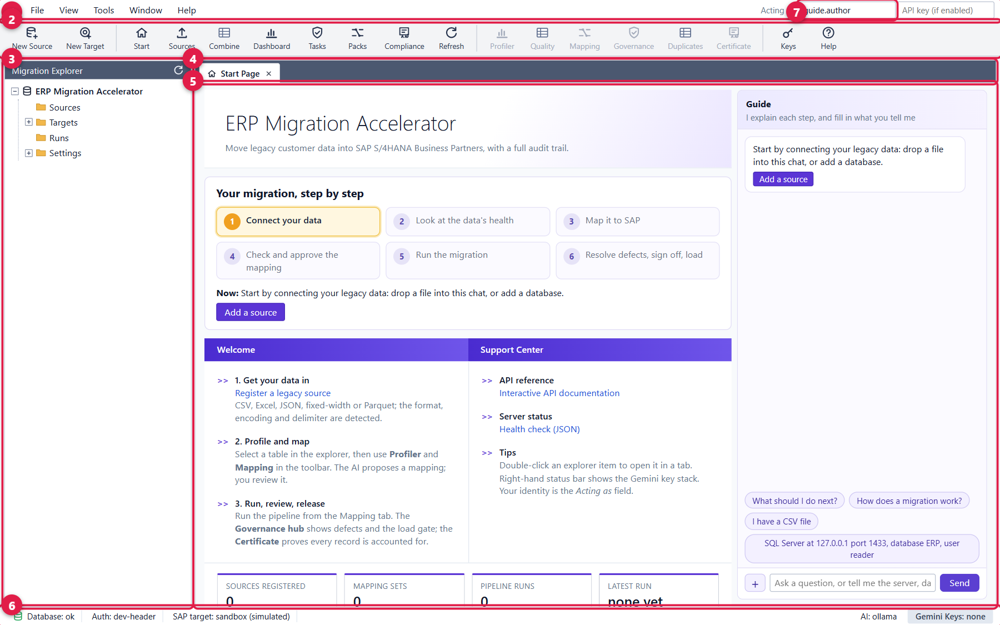
| # | Part | What it is for |
|---|---|---|
| 1 | Menu bar | File, View, Tools, Window, Help: the usual menus. |
| 2 | Toolbar | The big buttons: New Source (bring data in), New Target (say where it goes), Profiler, Quality, Mapping, Governance, Duplicates, Certificate, and more. Some are greyed out until they make sense: you cannot ask for a certificate before there is a run. |
| 3 | Explorer | A tree of everything: Sources (your tables), Targets, Runs, Settings. Click an item to pick it; the toolbar buttons then work on it. Double-click to open it. |
| 4 | Tabs | Every page opens in a tab, like a web browser, so you can jump back and forth. |
| 5 | Work area | The page itself. The first one is the Start Page with a progress checklist. |
| 6 | Status bar | Is the database OK? Which SAP is connected (here: sandbox, simulated)? Which AI is active (here: ollama, a model on this computer)? |
| 7 | Acting as | Who you are. Every action is recorded under this name. In this practice set-up you type a name; in a real company people sign in and the name comes from their account. |
Pick first, then press. If a toolbar button is grey, you have not picked the table (or the run) in the Explorer yet. This is the most common reason for "nothing happens".
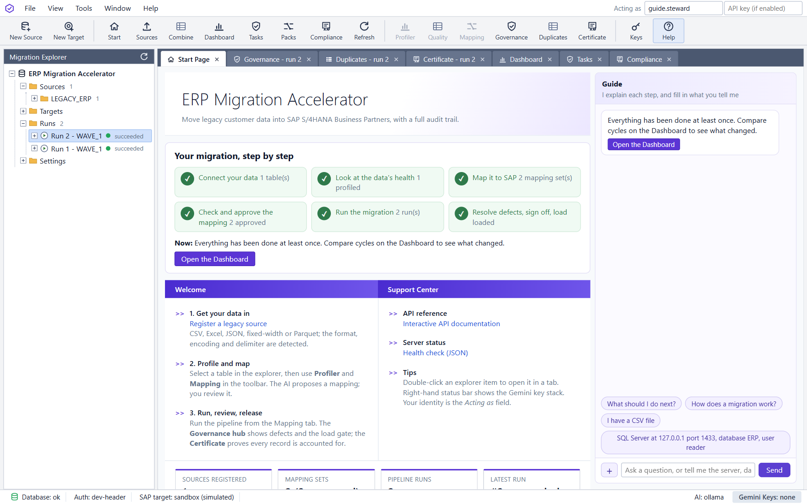
Our practice file
Meet the messy customer list we are going to move.
The file is legacy_ar_customers.csv. A CSV is the simplest kind of spreadsheet file: plain text, one row per line, values separated by commas. It has 1,980 rows and 10 columns.
All names are invented; no real person is in it.
CUST_ID,CUST_NAME,TAX_ID,EMAIL,PHONE,ADDR_STREET,CITY,COUNTRY,POSTAL_CODE,PAYMENT_TERMS
100000,Penene Labs LLC,US974844773,accounts@penene0.example.com,+33-315-7664202,258 Birch Road 0,Miami,usa,24514,NET60
100001,Nomili Labs Ltd,,accounts@nomili1.example.com,+91-996-9238128,408 River Road 1,,India,714169,COD
100002,Jujukama Motors Inc,CA430312277,accounts@jujukama2.example.com,+44-924-7743569,444 Pine Road 2,Toronto,Canada,K8H 8H9,NET60Look at the second row: the CITY is empty. Look at the first: the country is written usa in small letters. That is real life. The file is messy on purpose, in the ways real files are messy:
| What is wrong | How many | Why SAP minds |
|---|---|---|
| City is blank | 62 rows | SAP needs a city to post a letter. |
| Country is blank | 42 rows | SAP cannot choose the address and tax rules without it. |
| Countries that do not exist: Atlantis, Narnia, Wakanda | 44 rows | Test rows that slipped into the old system. |
| Same country, many spellings: USA, usa, US, United States; Germany, Deutschland, DE; UK, Great Britain, GB … | most rows | SAP wants the two-letter code, exactly: US, DE, GB. |
Payment terms spelled 7 ways: COD, Net 30, NET30, NET 60, NET60, NET90, and a strange WHEN-RECEIVED (50 rows) | ~1,700 rows | SAP has fixed payment-term codes. A human must decide what WHEN-RECEIVED means. |
| Names longer than 40 letters | 14 rows | The SAP field holds 40 characters. Longer names would be cut off or refused. |
| The same company twice (same tax number) | about 100 rows | SAP should hold each customer once. |
| Blank e-mail / phone / tax number | 440 / 373 / 537 | Not an error: some customers simply have none. |
1Bring the data in
Make a locked copy of the old data. The original is never touched.
Before a builder changes your house, they photocopy the plans. If anything goes wrong, the original plans are safe. The snapshot is that photocopy.
Press New Source
- In the toolbar press New Source. A wizard opens: a little guide with five pages that you click through with Next.
- Give the source a name (we use
LEGACY_ERP). It is the name of the old system; later one system can hold many tables. Leave the type on "Extract file" and the provider on Auto-detect.
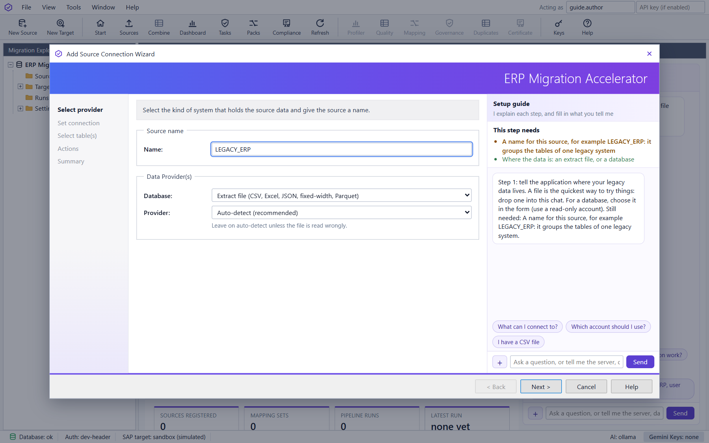
- Press Next, then Choose File and pick
legacy_ar_customers.csv. Press Test.

A green line: Test succeeded: format delimited, encoding utf-8, delimiter , - 10 columns. If it says everything landed in one column, or the accents look wrong, change the Delimiter or Encoding and press Test again.
- Press Next. Now describe the table: type a name (
AR_CUSTOMERS), tick the key column (CUST_ID) and type the control total you expect (1980).
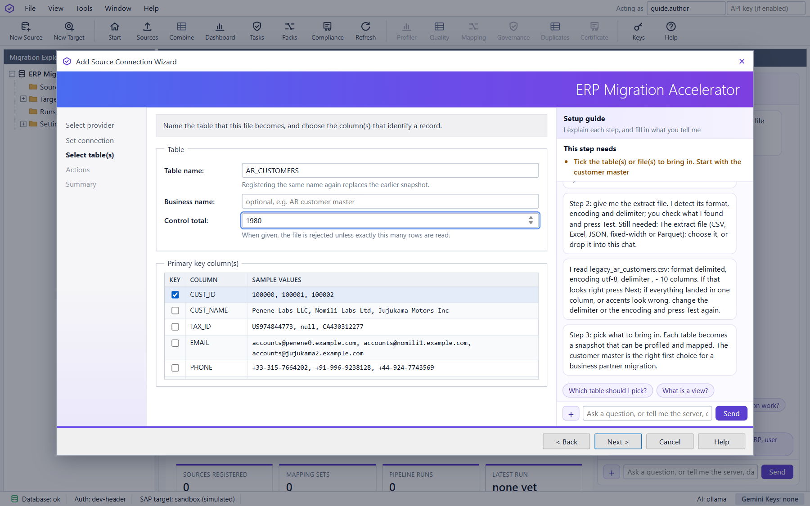
The key lets every later problem say "customer 100451 has a name that is too long" instead of "a name somewhere". The control total protects you from a half-finished export: if your colleague sent 1,500 rows instead of 1,980, the application stops you right here.
- Press Next. Page 4 asks what to do at the end. Tick "Profile the table now" and leave the others empty.

- Press Next to read the summary, then Finish.

The wizard closes, the rows are read and counted, the snapshot is made, and a new tab, Profiler, opens. A message says Source LEGACY_ERP / AR_CUSTOMERS registered: 1,980 rows, 10 columns.
2Look at the data
Two check-ups: the profile (what is in it?) and the quality check (what is wrong with it?).
The profile
The Profiler page opens by itself. It is a medical check-up for the table.
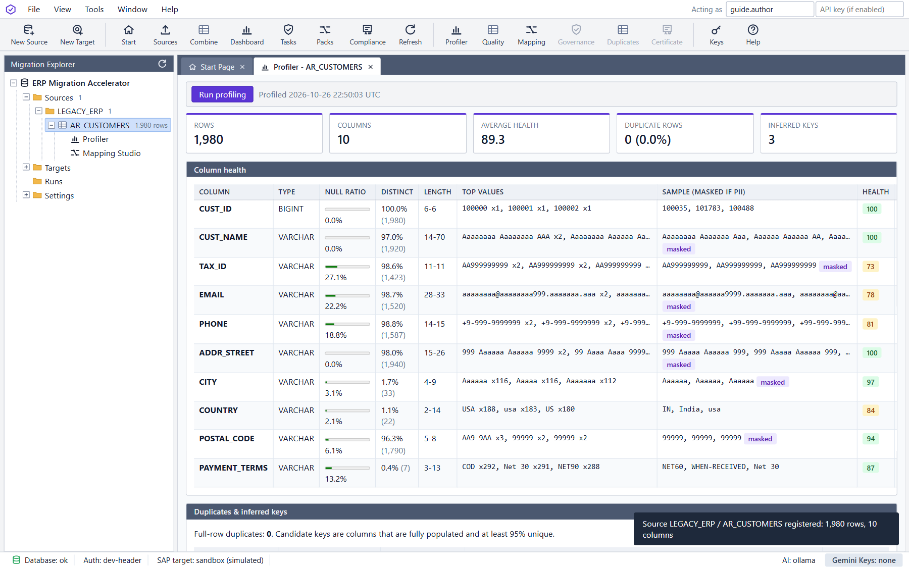
| Column of the report | What it tells you |
|---|---|
| Type | What kind of thing is in the column: whole numbers (BIGINT), text (VARCHAR) … |
| Null ratio | The share of blank cells. TAX_ID is 27.1% blank, CITY 3.1%, CUST_ID 0%. |
| Distinct | How many different values. CUST_ID is 100% distinct (every customer has their own number, as a key should). COUNTRY has 22 different spellings. |
| Length | The shortest and longest value. CUST_NAME runs from 14 to 70 characters: SAP only takes 40. |
| Top values | The most common values and how often. Country: USA 188 times, usa 183 times, US 180 times: the same country, three spellings. |
| Sample (masked) | A few examples, with letters shown as A/a and digits as 9, so personal data is not shown to everyone. |
| Health | A score from 0 to 100. Green is good; amber (like TAX_ID, 73) is worth a look. |

CUST_ID is unique, so it can be the key. The same name occurs 60 times (60 surplus rows), the same street 40 times: a first hint of duplicate customers.The quality check
The profile measures. The quality check judges: it runs a library of tests ("is this a real country?", "is this tax number used by several customers?") and lists what it found, worst first.
- Select the table in the Explorer and press Quality in the toolbar.
- Press Assess data quality now.
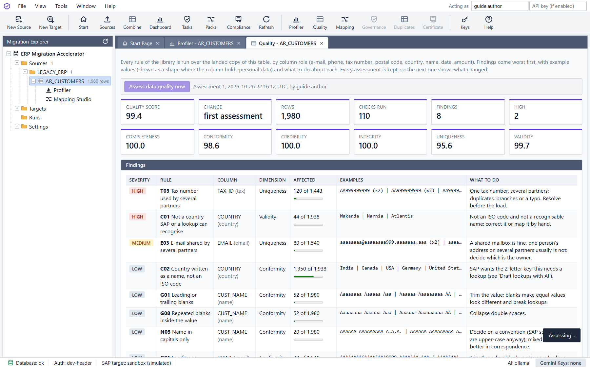
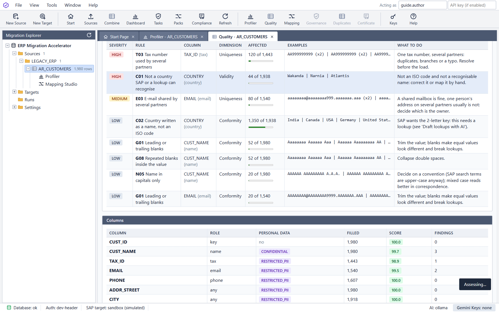
| Finding | In plain words |
|---|---|
| HIGH T03 Tax number used by several partners | 120 customers share a tax number with another customer. Duplicates, branches, or a typing mistake: somebody has to decide. |
| HIGH C01 Not a country | 44 rows say Wakanda, Narnia or Atlantis. |
| MEDIUM E03 E-mail shared by several partners | A shared mailbox (info@…) is fine; one person's address on several customers usually is not. |
| LOW C02 Country written as a name, not a code | SAP wants US, not United States: it needs a lookup table. |
| LOW G01 / G08 / N05 … | Extra spaces, double spaces, names written in capitals only. |
A score of 99.4 does not mean "all fine". The score is an average over many tests, so a few rows with a big problem hardly move it. Always read the findings, not just the score.
3Write the rules (the mapping)
Tell the application which old column becomes which new field, and how to change it on the way.
You are packing for a new house. The mapping is your packing list: "things from the old kitchen drawer go into the new kitchen drawer; the old box labelled 'books' goes into the new study." Each line of that list is a rule.
What the new house looks like
SAP keeps one customer in several drawers (tables), each holding one kind of fact:
| SAP table | Holds | Example field |
|---|---|---|
BUT000 | The customer in general | NAME_ORG1 (the name), BU_GROUP (the customer group) |
ADRC | The address | STREET, CITY1, POST_CODE1, COUNTRY |
ADR6 | SMTP_ADDR | |
ADR2 | Telephone | TEL_NUMBER |
KNB1 | Data for the accounting department | ZTERM (payment terms) |
A field name is written TABLE.FIELD, for example ADRC.CITY1. A star (*) after it, as in BUT000.NAME_ORG1 *, means SAP insists on it (mandatory).
The four kinds of rule
| Kind | Meaning | Example from our file |
|---|---|---|
DIRECT_COPY | Copy the column as it is | CUST_NAME → BUT000.NAME_ORG1 |
STATIC_VALUE | The same fixed value for every customer | 'Z001' → BUT000.BU_GROUP (everyone is in customer group Z001) |
VALUE_MAPPING | Translate through a lookup dictionary | usa, USA, United States → US into ADRC.COUNTRY |
SQL_EXPRESSION | A small formula | upper(left(trim(CUST_NAME), 20)) → BU_SORT1 (the search key: first 20 letters, capitals, no spaces at the ends) |
The Mapping Studio
Select the table and press Mapping. This is the workshop where rules are made.

Way 1: let the AI propose
Press Generate AI mapping. An AI model reads the column names and a few example values and suggests, for each column, the SAP field it fits best, with a percentage of confidence and its reason.
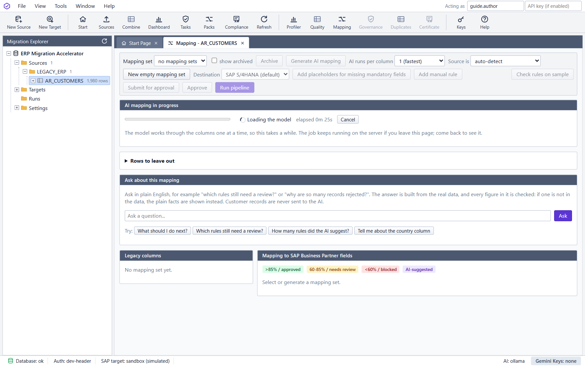

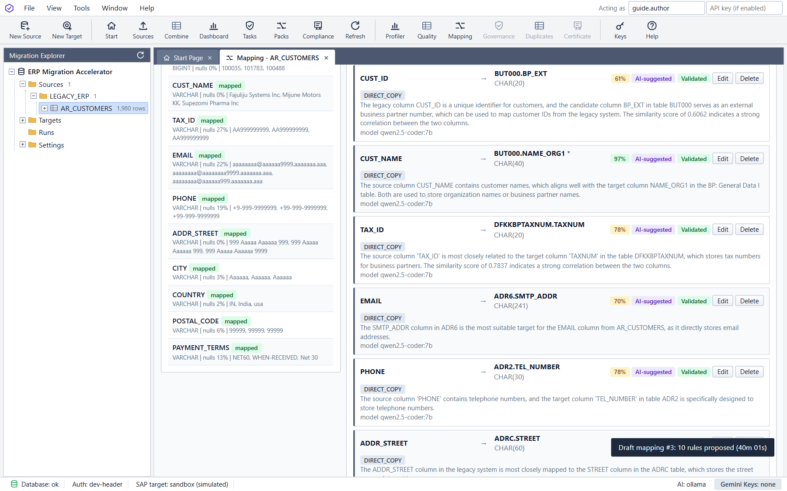
- In this guide the AI was a small model running on the same computer, so nothing left it. It took about 40 minutes for 10 columns. An online AI service is usually much faster, if your company allows it.
- It chose a target field for all 10 columns and got 9 of 10 right. The miss:
COUNTRYwas sent toADRC.BANKS(the country of a bank) instead ofADRC.COUNTRY, with 70% confidence, the same as two correct rules and higher than the correct 61% for the customer number. The percentage did not separate right from wrong. What caught it was a separate check that only 2 of 5 sample values were valid country codes, which marked the rule needs review. - It proposed 10 rules, all plain copies. It did not invent the country dictionary, the payment-term codes, or the fixed values SAP needs (customer group, type). Those depend on your business, and no AI can guess them.
- Colours: green = confident (over 85%), amber = needs review (60–85%), red = blocked (under 60%). A rule the AI is unsure about is never approved automatically.
So: the AI saves typing, not thinking. Treat it like a keen helper who is new to your company.
Way 2: write the rules yourself
We will write our own rules, because we know the business. Press New empty mapping set: a blank page for a new version of the packing list.
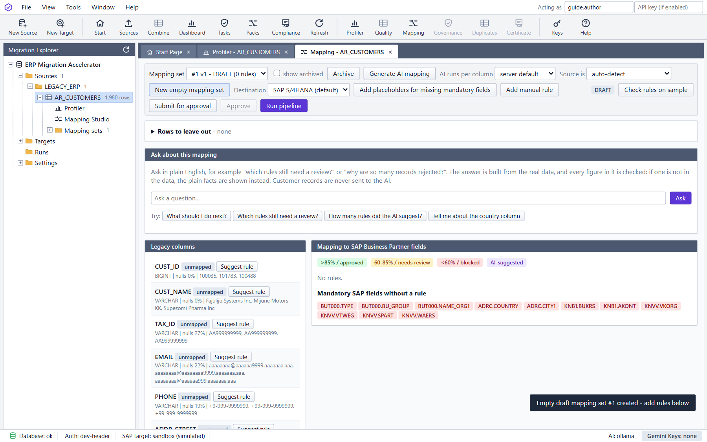
- Press Add manual rule.
- Fill the little form: the SAP table, the SAP field, the kind of rule, the legacy column, and the formula or value if the kind needs one.
- Press Add rule. Repeat for every field.
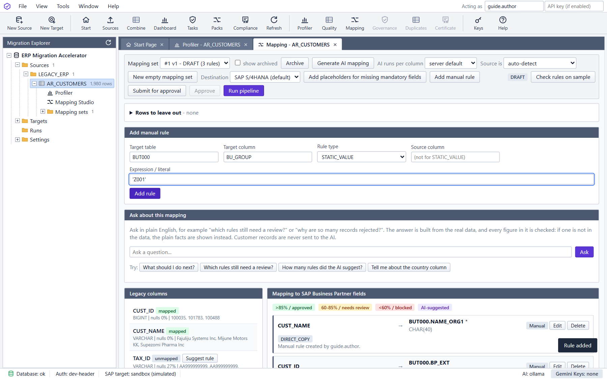
'Z001' for BUT000.BU_GROUP. Fixed text goes in quotes.Our twelve rules, in the order we typed them:
| SAP field | Kind | From | Note |
|---|---|---|---|
| BUT000.NAME_ORG1 | DIRECT_COPY | CUST_NAME | the name |
| BUT000.BP_EXT | DIRECT_COPY | CUST_ID | keeps the old customer number |
| BUT000.TYPE | STATIC_VALUE | '2' | 2 = organisation |
| BUT000.BU_GROUP | STATIC_VALUE | 'Z001' | customer group |
| BUT000.BU_SORT1 | SQL_EXPRESSION | upper(left(trim(CUST_NAME), 20)) | search key |
| ADRC.STREET | DIRECT_COPY | ADDR_STREET | |
| ADRC.CITY1 | DIRECT_COPY | CITY | |
| ADRC.POST_CODE1 | DIRECT_COPY | POSTAL_CODE | |
| ADRC.COUNTRY | VALUE_MAPPING | COUNTRY | needs a dictionary |
| ADR6.SMTP_ADDR | DIRECT_COPY | ||
| ADR2.TEL_NUMBER | DIRECT_COPY | PHONE | |
| KNB1.ZTERM | VALUE_MAPPING | PAYMENT_TERMS | needs a dictionary |
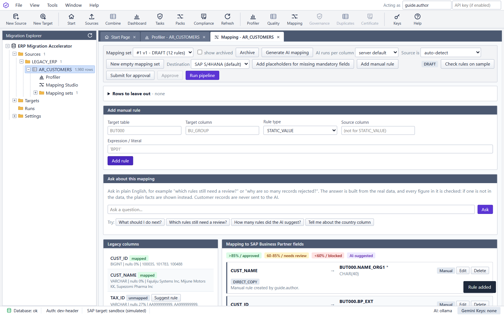
CHAR(40)), the kind of rule and a sample result such as sample: 99.3% pass.Teach the dictionaries
The two VALUE_MAPPING rules start empty ("0 lookup values"). Press Edit on the rule, type the dictionary in the Lookups box as {"old value": "new value"}, tick Confirm as reviewed (you are promising you read it), and press Save rule.
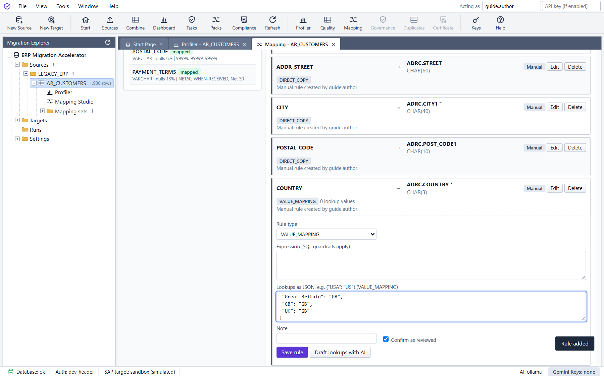
Great Britain → GB, UK → GB …Capital letters do not matter in a lookup. You only need USA → US; usa and Usa are found too. That is why our country dictionary has fewer lines than the file has spellings.
Check the rules before anybody is asked to approve them
Press Check rules on sample. The application tries the rules on the real rows (a dry run, nothing is saved) and reports.
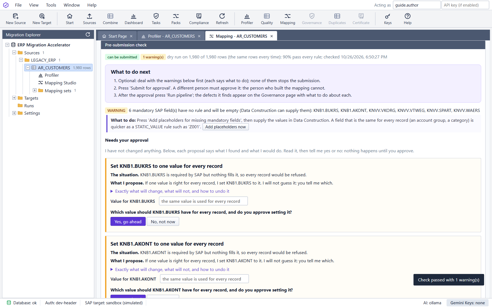
The amber warning says 6 mandatory SAP fields have no rule and will be empty. A warning does not stop you. We will deal with it in step 7. The remaining 10% that did not pass is exactly what the gate will show us in a moment.
4A second person approves
Nobody marks their own homework.
Press Submit for approval. The status changes from DRAFT to SUBMITTED, and the rules can no longer be edited by accident.
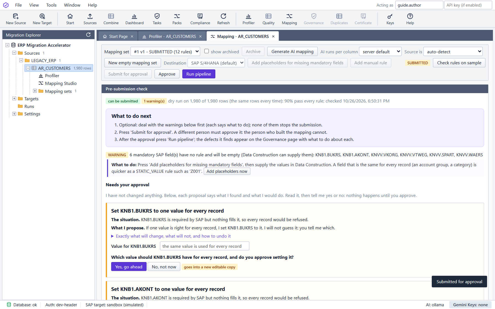
- Change Acting as (top right) to the name of a different person. In real life that person would sign in with their own account.
- Read the rules. Press Approve.
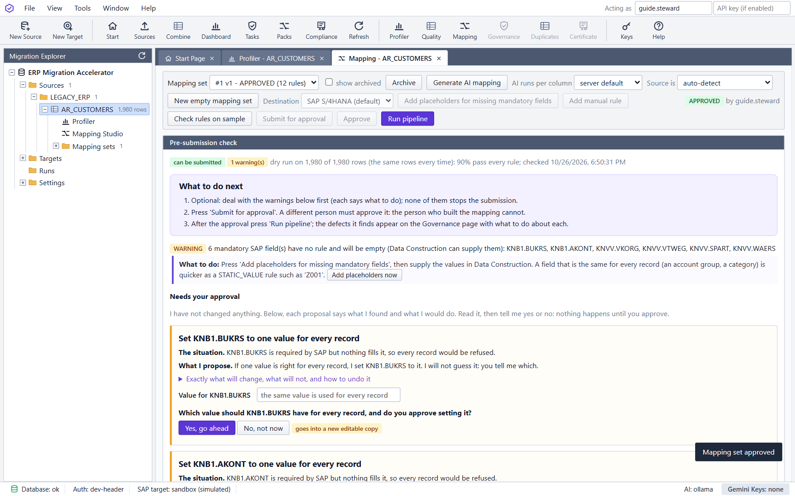
guide.steward, and recorded. The rules are now locked. Pressing Approve as the same person who wrote the rules is refused: that is called segregation of duties.If one person could write the rules, approve them and deliver them, one mistake (or one dishonest person) could damage the company's customer list with nobody noticing. Two pairs of eyes is the oldest safety rule there is.
5Run it
The moving van drives. Every customer goes through the rules and the checks.
Press Run pipeline. Behind the scenes, in order:
- Leave out the rows you told the application to skip (we have not yet).
- Apply your rules to every row: copy, calculate, translate.
- Find twins: customers that are the same company entered twice are merged into one.
- Check against SAP's rules: is every mandatory field filled, is every value short enough, is every code a real code?
The run takes seconds for a file this size (minutes for a million rows). When it ends, a new tab, the Governance page, opens by itself.
The count always adds up: left out + merged + rejected + valid = every row you started with. A row can never quietly disappear. You will see that sum again on the certificate.
6The gate says STOP
The first run is blocked. That is not a failure: finding problems is the point.
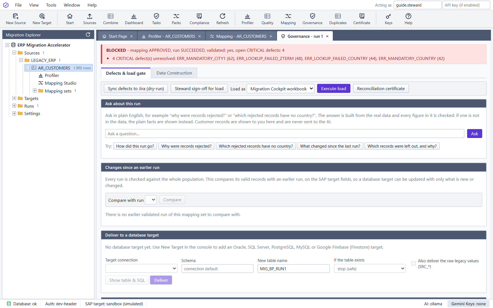
Scroll down to Rule-aggregated defects. A defect here is a group: all the rows that broke the same rule are counted together, with a few example customer numbers and the root cause in plain words.
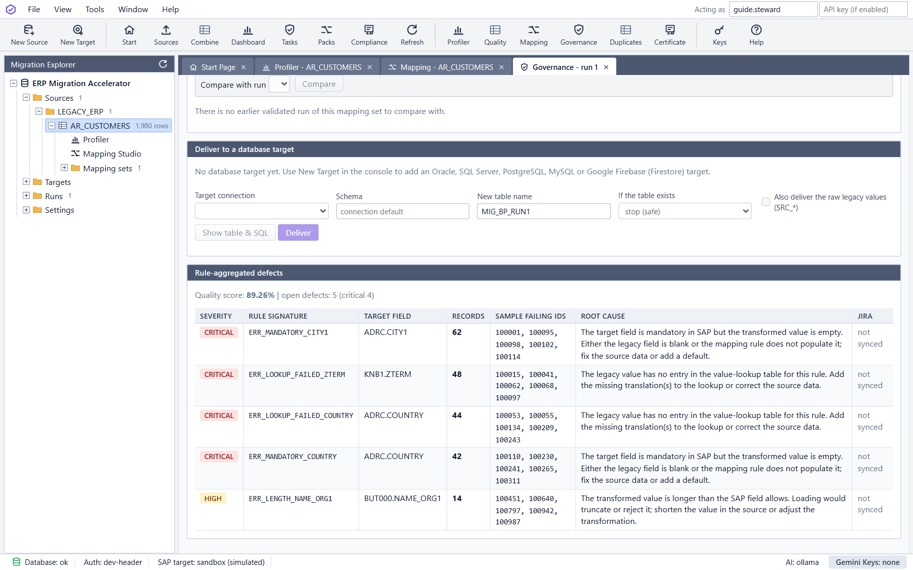
| Severity | Defect | Rows | What it really means | What to do |
|---|---|---|---|---|
| CRITICAL | ERR_MANDATORY_CITY1 | 62 | SAP insists on a city; these customers have none. | Leave these rows out (or find the city in another source). |
| CRITICAL | ERR_LOOKUP_FAILED_ZTERM | 48 | The payment term is WHEN-RECEIVED, which our dictionary does not know. | Decide what it means and add it to the dictionary. |
| CRITICAL | ERR_LOOKUP_FAILED_COUNTRY | 44 | Wakanda, Narnia and Atlantis are not in the country dictionary. | They are not countries: leave these rows out. |
| CRITICAL | ERR_MANDATORY_COUNTRY | 42 | SAP insists on a country; these rows have none. | Leave these rows out. |
| HIGH | ERR_LENGTH_NAME_ORG1 | 14 | The name is longer than the 40 letters SAP stores. | Shorten the name in the rule. |
The gate is like the inspector who walks into the new house with the delivery list and says "Fourteen boxes are too big for the door, forty-eight have a label I cannot read, and a hundred and some have no address at all. I am not letting this in yet." Better to hear it here than after the boxes are inside.
The page has an Ask about this run box. You can type, or press one of the suggestions, such as Why were records rejected? or Which records were left out, and why?. The answer is built from the real numbers, and every figure in it is checked against the data; if a figure cannot be checked, plain facts are shown instead. Customer records are never sent to the AI.
7Fix it: make version 2
An approved set is locked, so a fix goes into a new editable copy. Then the same road again: approve, run, gate.
The rules were approved, so they are locked. You cannot edit a locked set; you make a new version, a copy that you may change. The easiest way is a Fix it button.
7a. Press a Fix-it button (and say yes)
Back in the Mapping Studio, press Check rules on sample again. Under the check appear cards headed Needs your approval. Each card says the situation, what the application proposes, and how to undo it. Nothing happens until you say yes.
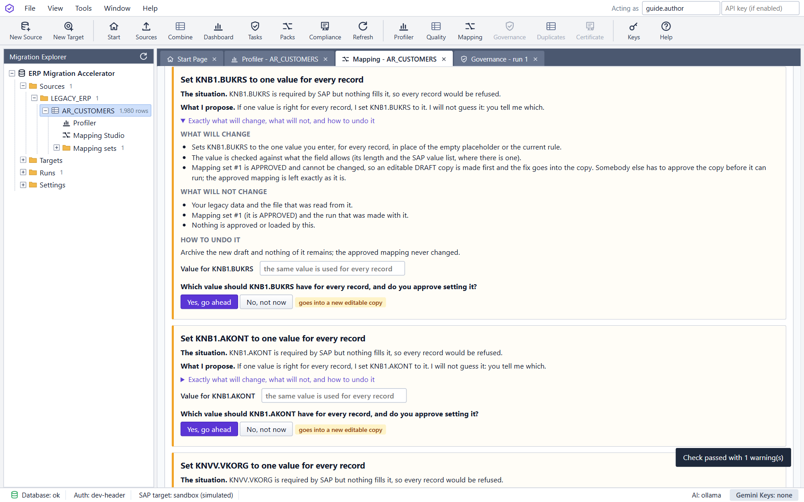
KNB1.BUKRS and nothing fills it. The card asks you for the value: it will not guess. The little arrow opens "Exactly what will change, what will not, and how to undo it".We typed 1000 (an example company code; in real life your SAP team tells you the right one) and pressed Yes, go ahead.
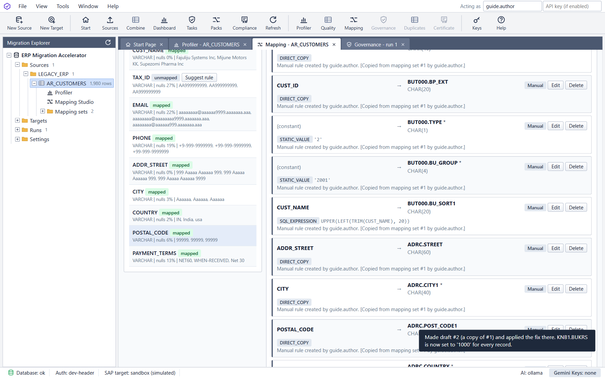
7b. Leave out rows that cannot be migrated
Open Rows to leave out. Choose a column, a condition and a reason, press Check how many rows, then Leave these rows out. The rows are not deleted: they are kept in a separate file with the reason, and counted on the certificate.
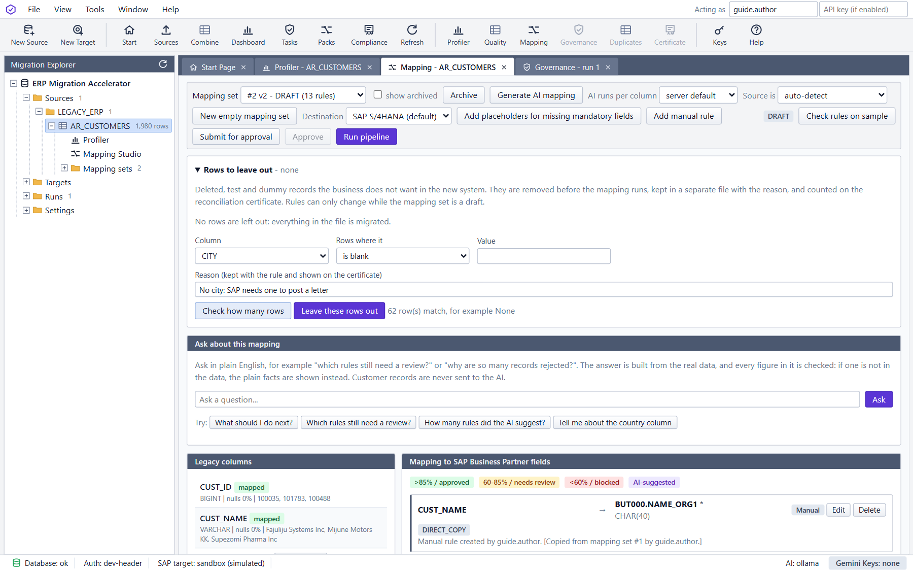
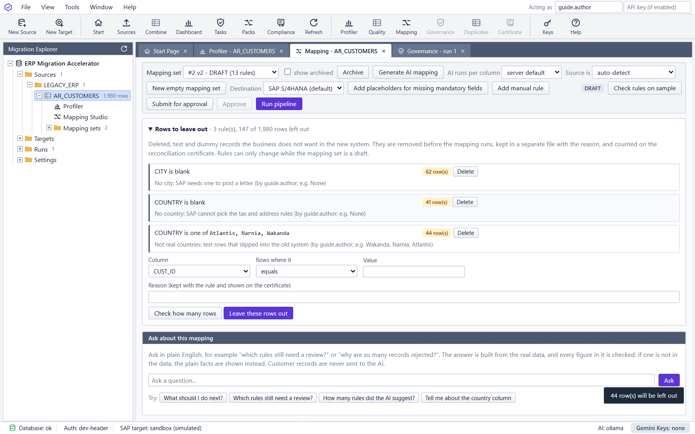
Leaving out 147 customers (7%) is a business decision, not a technical one. Somebody should ask: do we call those customers, or fix the data in the old system? The application makes the decision visible and reversible; it does not make it for you.
7c. Teach the dictionary a new word, and shorten the long names
We decided that WHEN-RECEIVED means CASH and added it to the payment-term dictionary (Edit the rule, add the pair, Save rule). Then we changed the name rule from a plain copy to a formula that keeps only the first 40 letters.
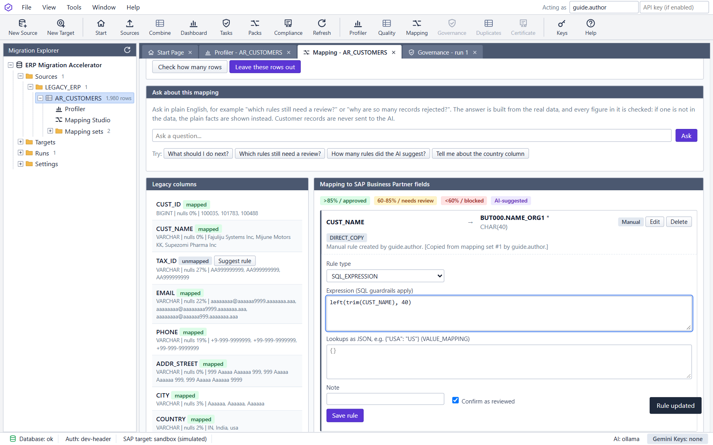
NAME_ORG1 is now a SQL_EXPRESSION: left(trim(CUST_NAME), 40).Cutting a name at 40 letters can cut a word in half. It is the fastest fix, not the prettiest. In a real project somebody would look at the 14 names and shorten them properly.
7d. Check again, approve again, run again
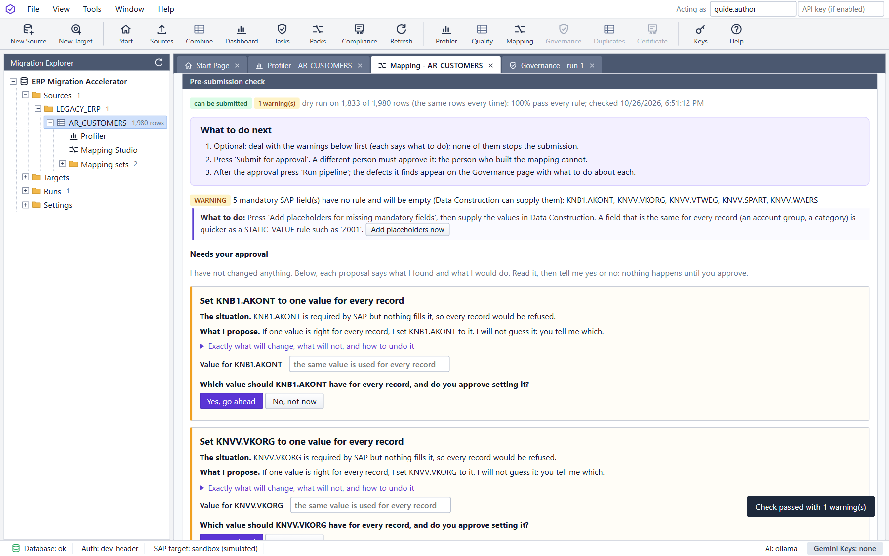
Then the same road as before: Submit (as the author), Approve (as a different person), Run pipeline.
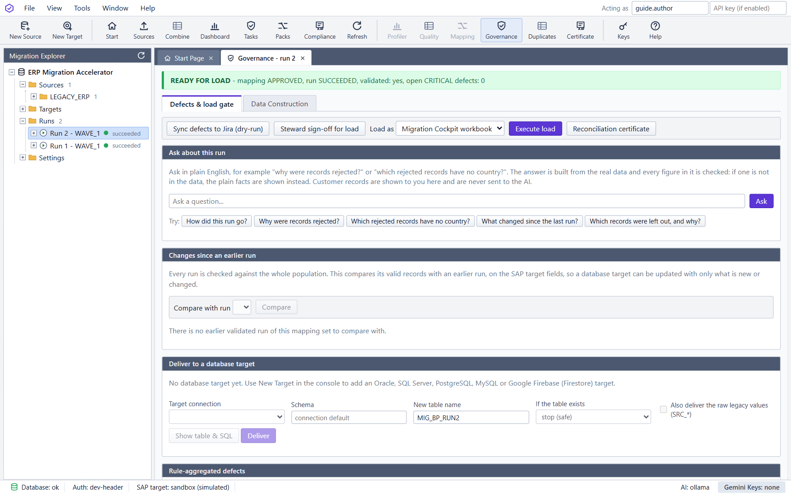
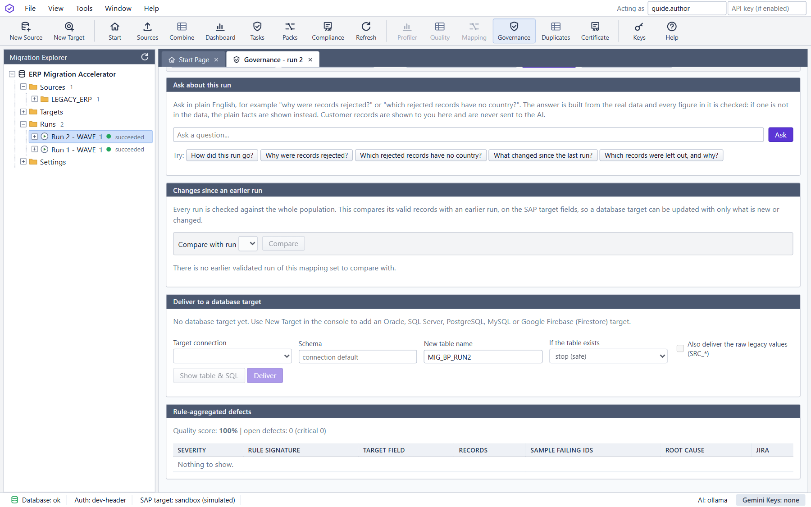
8Twins: finding duplicates
The same company entered twice should arrive once.
During the run the application looked for twins: two rows that are really the same customer. It does this in two ways, and it is deliberately careful, because merging two different companies is much worse than keeping one company twice.
| Kind of match | Example | What happens |
|---|---|---|
| Exact: same tax number, e-mail or phone | Two rows with the tax number AA999999999 | Merged: one survivor, the other kept in a list. |
| Fuzzy: names and addresses almost the same | "Müller GmbH, Hauptstr. 5" and "Mueller GmbH, Hauptstrasse 5" | A similarity score from 0 to 100. High and safe: merged. In between: sent to a person. |
| Vetoed | Same name but two different tax numbers | Never merged. |
Accents and German spellings (ü / ue, ß / ss) are ignored when comparing, a very common name such as "Müller" is never merged on the name alone, and an address that is clearly different sends the pair to a person.
What happened in our run
The certificate (next but one chapter) shows DUPLICATE_CHILD: 100: 100 rows were recognised as the same company as another row (for example, the same tax number) and merged, keeping 1,733 customers. The first row is the survivor, loaded into SAP; the others are listed, with their customer numbers, as intentionally not loaded.
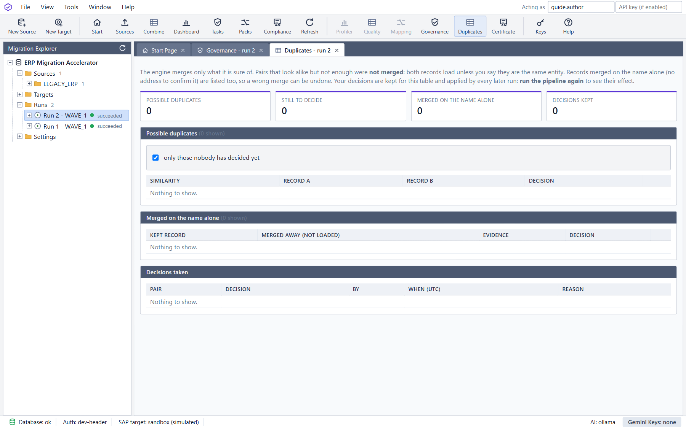
When there are uncertain pairs, you decide for each: same customer or different. Your decision is remembered and used in every later run, with your name and your reason.
9Sign off
A named person says: "I have read the proof. I accept this run."
With the gate green, the toolbar of the Governance page holds the final buttons.
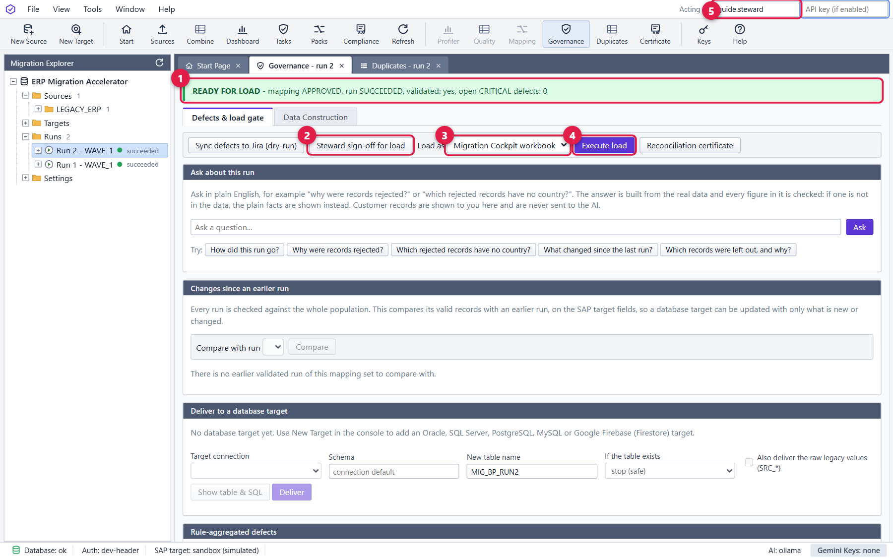
- Make sure Acting as shows the steward.
- Press Steward sign-off for load.
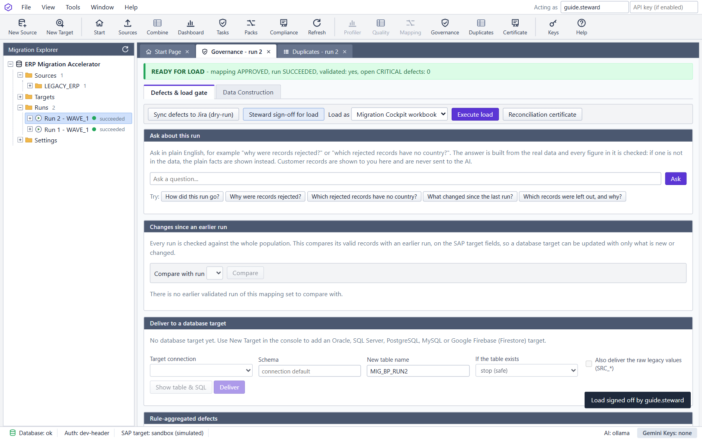
Approval says "the rules are fine". Sign-off says "the result of running them is fine, and I take responsibility for putting it in the live system". They are two different questions, and two different moments.
10Deliver it
Put the customers into the new system, and then check, row by row, that they really arrived.
There are three ways out, chosen in the Load as list (and a fourth, a database, in its own panel):
| Way | What happens | When to use it |
|---|---|---|
| Migration Cockpit workbook | The application builds an Excel file in the exact format of SAP's own import tool (the Migration Cockpit). A person uploads it into SAP. | The classic route when the SAP team prefers to load themselves. |
| SAP sandbox (simulated) | The application sends every customer to a practice SAP stand-in and reports how many were accepted. | Rehearsals. This is what the guide used. |
| SAP live | The application sends every customer to a real SAP over its web interface (OData). | The real thing. It needs an SAP address and a technical user; it was not exercised in this guide. |
| A database target (PostgreSQL, SQL Server, Oracle, MySQL) or Google Firebase | The finished customers are written into a new table (Firebase: a new collection). | When the new home is not SAP, or to look at the result with ordinary tools. |
10a. Say where it goes: New Target
For a database, first describe it once. Press New Target and choose Database.
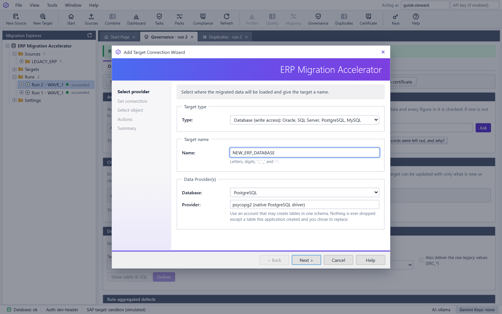
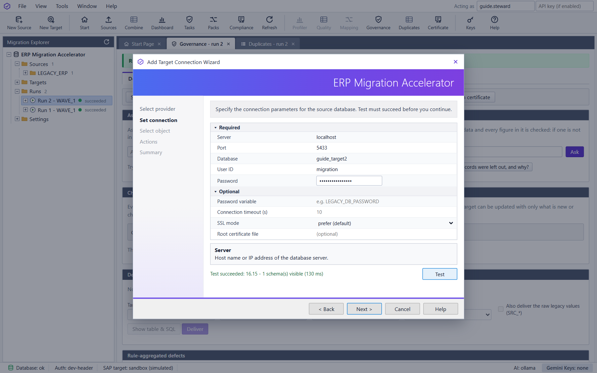
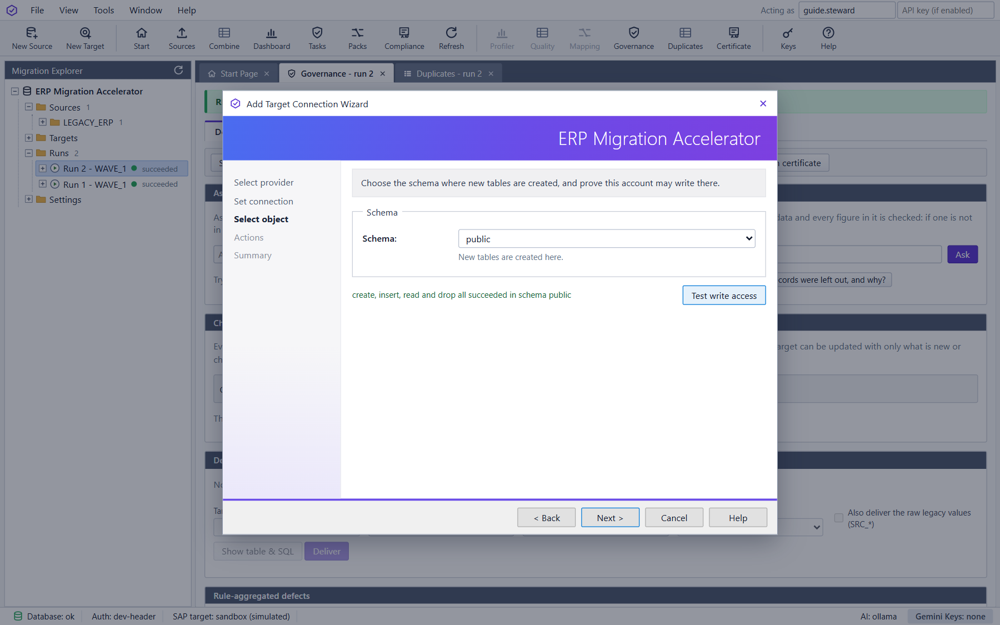
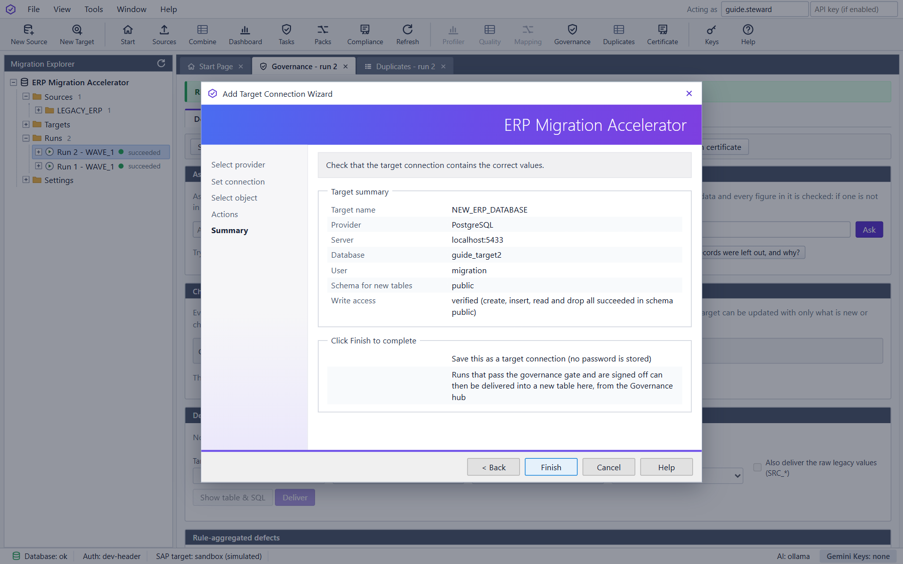
10b. Preview, then deliver
- In the Deliver to a database target panel, choose the target and type a new table name (we used
BP_CUSTOMERS). - Press Show table & SQL to see exactly what will be created.
- Press Deliver.
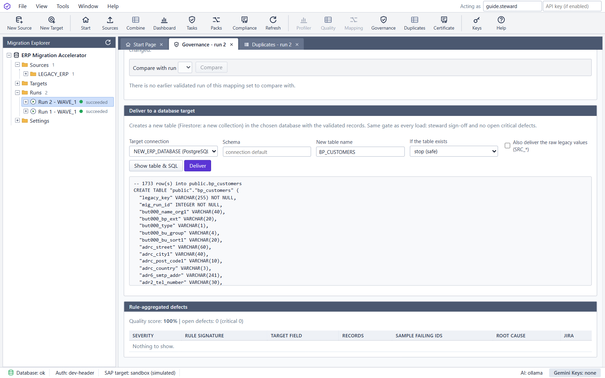
public.bp_customers. The table's columns, with the exact lengths, are shown, including two bookkeeping columns: legacy_key (the old customer number) and mig_run_id (which run wrote the row).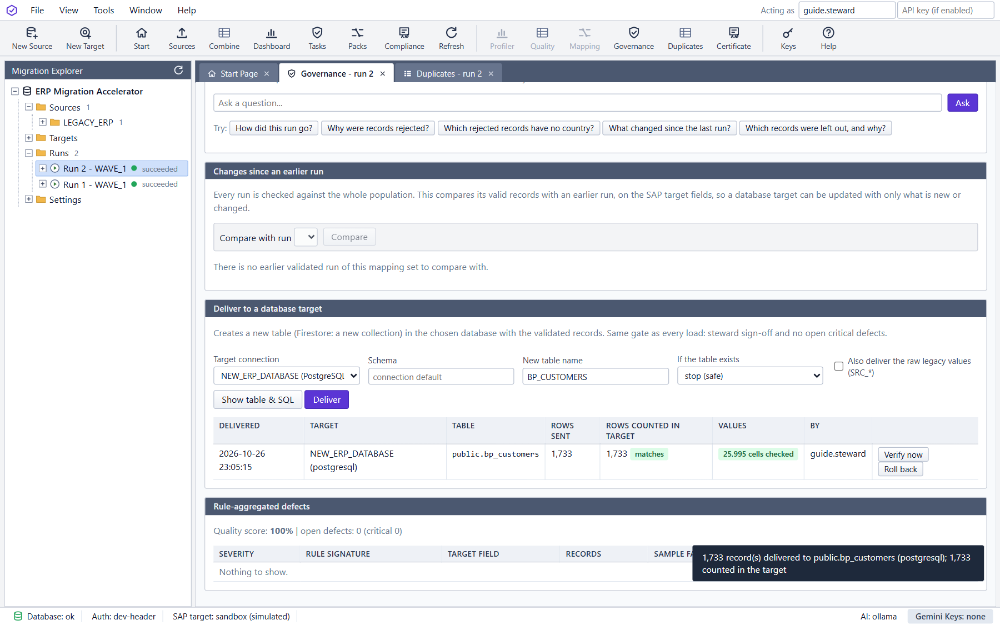
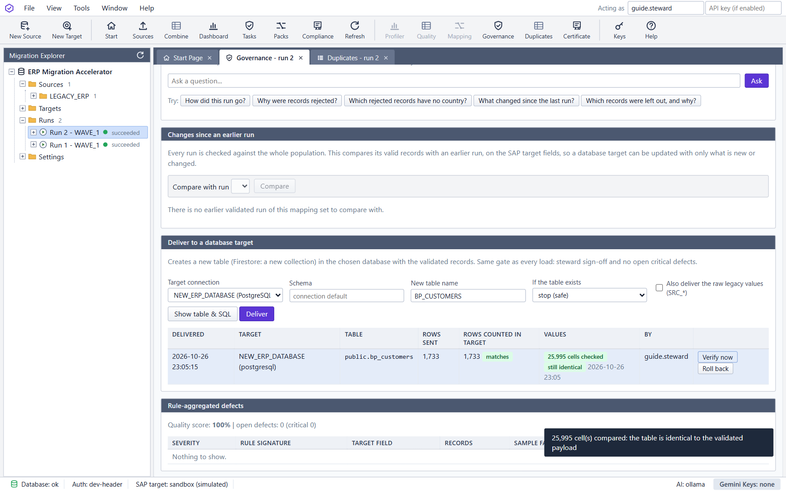
Create-only. The application never overwrites or merges into data that is already there. If a table of that name exists, it stops and tells you; choose a new name, or roll back the earlier delivery first.
10c. Rehearse the SAP load
Choose SAP sandbox (simulated) in Load as and press Execute load.
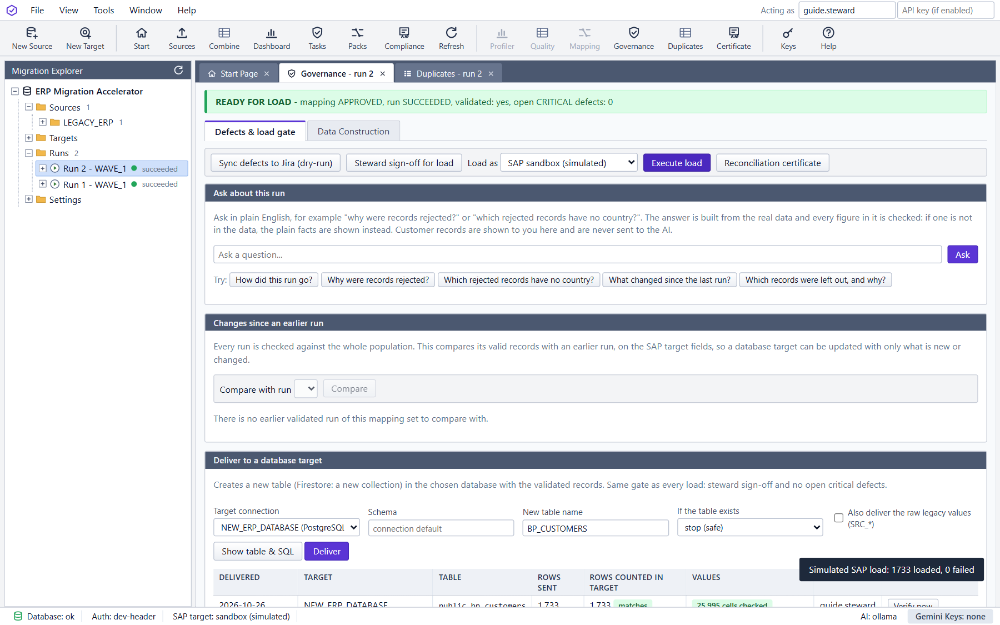
The SAP side is a stand-in that follows SAP's published interface. It proves that the application builds the right messages and handles success and failure. It does not prove that a particular company's real SAP will accept them. Before a real go-live, run the same steps against that company's SAP test system (client).
11The certificate: the receipt
Every customer, accounted for.
Press Certificate in the toolbar (or the button on the Governance page).
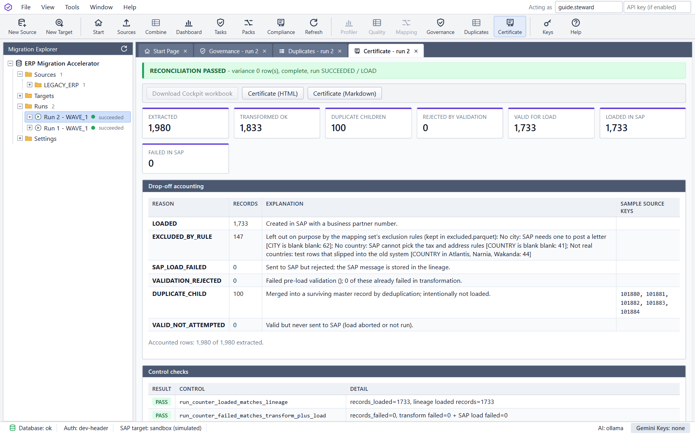
The heart of it is the drop-off accounting: where did every one of the 1,980 customers go?
| Reason | Rows | Plain words |
|---|---|---|
| LOADED | 1,733 | Created in the new system. |
| EXCLUDED_BY_RULE | 147 | Left out on purpose, with the exact reasons (no city 62, no country 41, not real countries 44). |
| DUPLICATE_CHILD | 100 | The same company as another row; merged into the survivor. |
| VALIDATION_REJECTED | 0 | Failed SAP's checks. (None: the gate made sure.) |
| SAP_LOAD_FAILED | 0 | Sent but refused by the system. (None.) |
| Sum | 1,980 | 1,733 + 147 + 100 = 1,980. Every row accounted for. |

When an auditor, a boss or a customer asks "how do you know nothing was lost?", you do not say "trust me". You hand them this page. It can also be downloaded as an HTML page or a Markdown file.
The banner reads PASSED only when the load really happened. If you finish a run and have not yet loaded anywhere (not into SAP, and not into the SAP stand-in), the certificate honestly says not passed for that one reason (load_phase_reached). Loading into a plain database also counts as a delivery line, but the SAP load phase is a separate check.
12Oops: taking a delivery back
Exactly what one delivery wrote, and nothing else.
Every row the application writes carries the number of the run that wrote it (mig_run_id). That is what makes a precise undo possible.
- On the Governance page, find the delivery in the table.
- Press Roll back.
- Type the reason (it is kept in the record) and confirm.
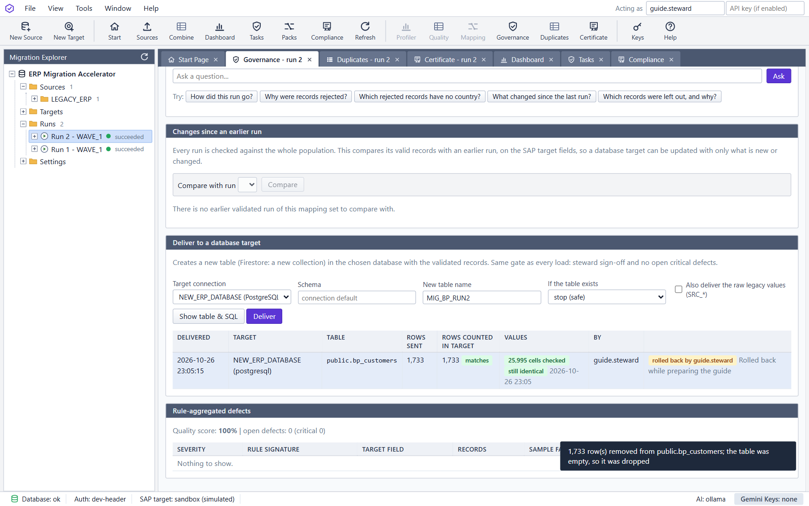
Rows that belong to other runs, or that someone else added, are not touched. If the table is empty afterwards, the table itself is removed.
The other buttons
Things you do not need for your first move, but will want soon.
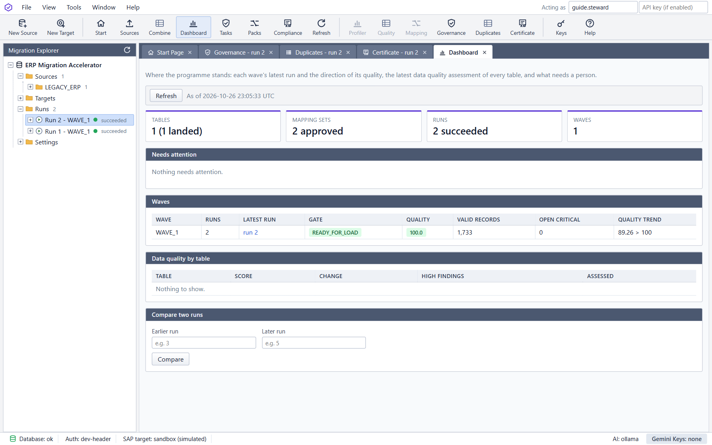
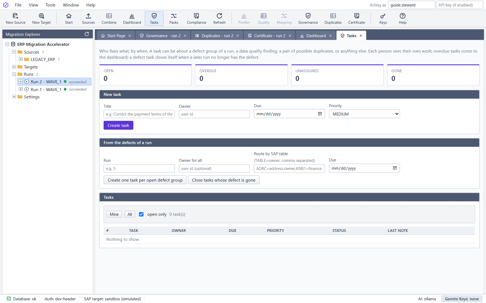
ADRC=address.owner). A task closes itself when a later run no longer has the defect.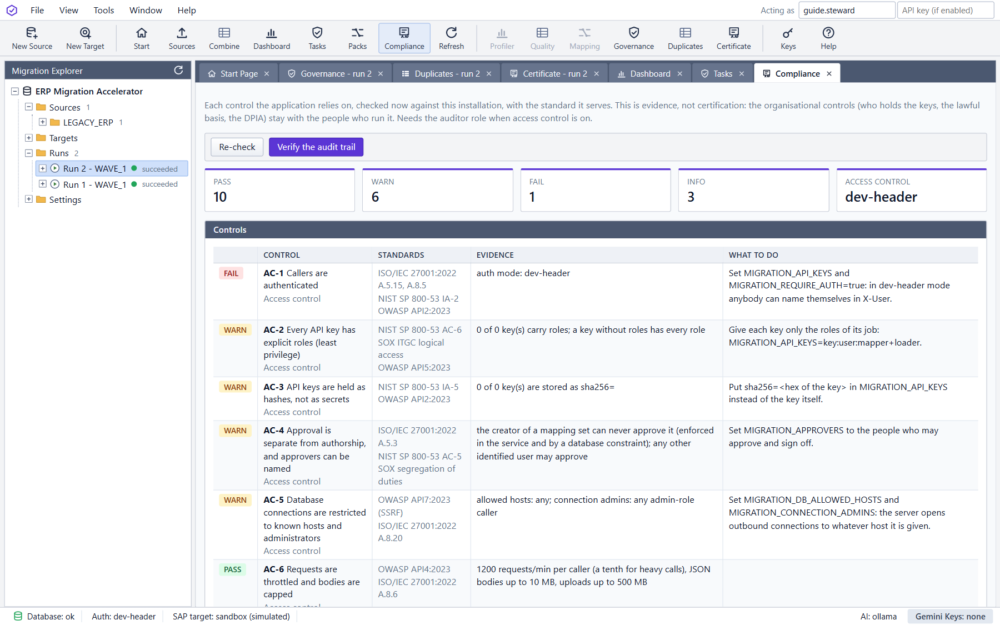
| Button | What it is for |
|---|---|
| Sources | A list of every table you brought in. |
| Combine | Join and filter tables you have already brought in into one new source table, before mapping. |
| Packs | Save an approved mapping (its rules, lookup dictionaries and leave-out rules, never any customer values) and reuse it in the next migration. An import makes a draft; somebody independent still approves it. |
| Keys | Add or remove the keys for the online AI service (Gemini). They are kept in memory only; the application never writes them to disk. |
| Help | The Start Page with the progress checklist and the Guide helper. |
| Setup guide (in every wizard) | A chat panel on the right that explains each page in plain words and can fill in a field if you tell it the server, database or user. |
One-page cheat sheet
Print this page and stick it next to your screen.
| # | Do this | Button | You should see |
|---|---|---|---|
| 1 | Bring the file in | New Source → wizard → Finish | Profiler tab with the right row count |
| 2 | Look at it | Profiler, then Quality → Assess | Health numbers; findings, worst first |
| 3 | Write the rules | Mapping → Generate AI mapping or New empty mapping set + Add manual rule | A card for every SAP field, with a sample pass rate |
| 4 | Check them | Check rules on sample | "can be submitted" and a pass rate |
| 5 | Submit | Submit for approval | Status SUBMITTED |
| 6 | Approve (someone else) | Acting as → other name → Approve | Status APPROVED |
| 7 | Run | Run pipeline | Governance tab opens |
| 8 | Read the gate | Governance | BLOCKED + defects or READY FOR LOAD |
| 9 | Fix | Check rules on sample → Fix-it card; Rows to leave out; Edit rule | A new DRAFT; repeat 4–8 |
| 10 | Sign off (steward) | Steward sign-off for load | "signed off by …" |
| 11 | Deliver | New Target (once) → Deliver, or Load as → Execute load | rows sent = rows counted; "cells checked" |
| 12 | Prove | Certificate | RECONCILIATION PASSED, 0 variance |
| – | Undo | Roll back | "rolled back by …" |
- Pick first, then press.
- Never approve your own work.
- Read the findings, not just the score.
- Change your original data.
- Overwrite what is already in the target.
- Let a row vanish without saying why.
When something goes wrong
Look for your problem in the left column.
| What you see | Probably because | What to do |
|---|---|---|
| A toolbar button is greyed out | You have not picked a table (or a run) in the Explorer. | Click the table (or the run) in the Explorer first. |
| After Test everything is in one column, or accents look odd | The delimiter or the encoding was detected wrongly. | Change Delimiter or Encoding in the wizard and press Test again. |
| The wizard says the row count differs from the control total | The file is incomplete, or the number you typed is wrong. | Ask for a fresh export, or correct the control total. |
| Approve is refused | You are the person who made the rules. | Change Acting as to somebody else. |
| Fix-it or Edit is refused | The set is approved and locked. | Use a Fix-it button (it makes a copy), or create a new mapping set. |
| The gate is BLOCKED | A critical defect is open. | Read the defect table: each line says the cause. Fix, make a new version, run again. |
| The AI is very slow or gives nothing | A local model on a small computer is slow; or no AI is configured. | Write the rules by hand (always possible), or add a key under Keys for an online AI service. |
| Deliver says the table already exists | Delivery is create-only. | Choose another table name, or roll back the earlier delivery. |
| Deliver is greyed | No sign-off yet, or no target. | Sign off first; add a target with New Target. |
| Firebase says quota exceeded | The free plan allows about 20,000 writes a day. | Wait a day, deliver fewer rows, or use a paid plan. |
| The certificate says not passed | The SAP load has not happened (only a check is red). | Run Execute load (sandbox or live), or accept that this run was a database-only delivery. |
| The port is busy when the application starts | Another copy is already running. | Use another port, or stop the other copy. |
Questions people ask
- Can I break the old data?
- No. The application only reads it, and works on a snapshot.
- Can I use my own file?
- Yes: New Source, choose your file. Excel, JSON, fixed-width and Parquet files work too, as do databases (PostgreSQL, SQL Server, Oracle, MySQL, MongoDB, Firebase) and cloud storage.
- Do I have to use the AI?
- No. Everything can be done by hand. The AI proposes, a person decides.
- Is my customers' data sent to the internet?
- Not by default: the AI in this guide ran on the same computer. With an online AI service, ask your administrator what is sent. Passwords and keys are kept in memory only.
- What if I change my mind after delivery?
- Roll back (chapter 12), fix, and deliver again.
- What does "SAP sandbox (simulated)" in the status bar mean?
- The application is connected to the practice stand-in, not to a real SAP.
For the grown-up
How to start the application, what it needs, and what was and was not tested.
The application is a web application (Python, FastAPI) with a catalogue in PostgreSQL and a working folder on disk. Everything below is done once, by whoever looks after the computer.
Start it
# 1. a PostgreSQL database for the catalogue (Docker is the quickest)
docker compose up -d postgres
# 2. Python packages
python -m venv .venv
.venv\Scripts\python -m pip install -r requirements.txt
# 3. tell it where things are (a file called .env in the project folder; the port is POSTGRES_PORT, 5432 unless you changed it)
DATABASE_URL=postgresql+psycopg2://migration:<password>@localhost:5432/migration_catalog
MIGRATION_WORKSPACE=workspace
# 4. create the tables and the SAP field catalogue
.venv\Scripts\python -m alembic upgrade head
.venv\Scripts\python -m src.seeds.seed_sap_catalog
# 5. start the application
.venv\Scripts\python -m uvicorn --factory src.api.main:create_app --host 127.0.0.1 --port 8000
# then open http://127.0.0.1:8000 in a browserSettings that matter
| Setting | What it does |
|---|---|
LLM_PROVIDER | ollama (default: a model on this computer, OLLAMA_MODEL, default qwen2.5-coder:7b), gemini (online; keys are added in the Keys panel and kept in memory only), or ollama-only. |
MIGRATION_REQUIRE_AUTH | true refuses to start unless MIGRATION_API_KEYS is set. Without keys, anybody can type any name into "Acting as", which is fine for a practice session and wrong for real data. |
MIGRATION_WORKSPACE | The folder for snapshots and run results. Back it up, and treat it as confidential: it holds copies of customer data. |
MIGRATION_AUTO_SEED | Seeds the SAP field catalogue automatically at start (default on). |
MIGRATION_APPROVERS | Who may approve and sign off. Default: anybody except the person who made the mapping. |
MIGRATION_DB_ALLOWED_HOSTS | Which servers the application may connect to. Default: any, because a user types the address. Set this in production. |
What was tested, and what was not
| Area | Status |
|---|---|
| Files (CSV, Excel, JSON, fixed-width, Parquet), profiling, 179 quality rules | automated tests, and used in this guide |
| AI mapping (local model) and the safeguards around it | tested; used in this guide. The online AI (Gemini) path is tested with a fake service, not in this guide. |
| Mapping rules, approval, run, de-duplication, gate, sign-off, certificate | automated tests, and used in this guide |
| Delivery into PostgreSQL, SQL Server, Oracle, MySQL, Firebase (Firestore), with rollback | tested against real servers (containers) and a real Firebase project; PostgreSQL used in this guide |
| Million-row runs | tested at 1,000,000 rows (see docs/scale-test.md) |
| SAP: Migration Cockpit workbook, sandbox, live OData | tested against a stand-in SAP only. Never against a real SAP system. Do this before a go-live. |
| Single sign-on, per-user accounts | sign-in by API key is supported (MIGRATION_API_KEYS); a company single-sign-on is not built in |
How these pictures were made
A script, scripts/make_guide_screenshots.py, drives a browser through the whole practice move on a fresh copy of the application and photographs each screen; scripts/guide_diagrams.py draws the flow charts; scripts/build_user_guide.py assembles this page. So the guide can be rebuilt whenever the application changes.